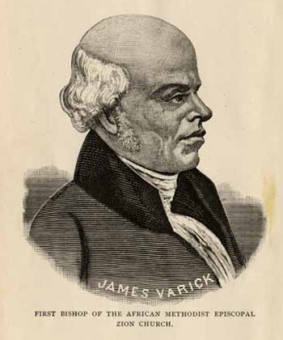

|
Like the similarly named African Methodist Episcopal Church, The African
Methodist Episcopal Zion Church was founded as a response to white racism.
Officially formed in 1821, the AME Zion Church was an important institution in
the antebellum black community, and a major supporter of abolition.
The Methodist denomination was founded in the 1730s by Anglican clergyman
John Wesley. Wesley accepted most traditional tenets of Christianity,
particularly the notion of an eternal God who exists simultaneously as Father,
Son, and Holy Spirit. He was also an advocate of the idea--controversial in his
time--that anyone could achieve salvation through good works. The worldview of
Wesley's church is encapsulated in their motto: "God Our Father, Christ Our
Redeemer, Man Our Brother." Consistent with the Methodist worldview, Wesley and
his followers ministered to people of all races and social classes. The religion
came to America in the 1760s, where it won many converts. African Americans were
particularly attracted to the Methodist church; a product of the denomination's
dramatic style of worship, its belief in a personal and intimate relationship
with God, and its anti-slavery beliefs.
By the 1770s, many Methodist congregations had been founded in America. Among
the most prominent was New York City's John Street Methodist Church, which by
1793 had a congregation made up of 40 percent African Americans. However,
despite John Wesley's tolerant philosophy, the African American parishioners at
John Street Methodist Church were not treated as equals. They were segregated,
and often denied the opportunity to take communion. Most problematic, however,
was that they could not be ordained to preach in church; they were designated as
itinerant preachers only.
|

Bishop James Varick
|
Dissatisfied with their limited role in the church, a trio of free African
Americans--Peter Williams, James Varick, and William Miller--founded the African
Chapel in 1796, and began holding separate services. They later named their
dwelling Zion Church, likely inspired by Psalms 87:2-3, which says, "The Lord
loves the gates of Zion more than all the dwellings of Jacob. Glorious things
are said of you, O city of Zion." The new church was limited in membership to
those of African descent, but it had no ordained black minister, as that was not
allowed by the Methodist church in America. Accordingly, white ministers
delivered Sunday services and dispensed communion. This meant that African
American worshipers still found themselves under white control.
In 1820, the leaders of the Methodist church in New York attempted to
consolidate their authority over the Zion Church--which had grown to include as
many as a dozen congregations--and to assert their control over its property
holdings. This led to a revolt among African-American congregants, as well as
some white members of the church hierarchy. In 1821, the Zionists formally
separated from the white-controlled Methodist Episcopal Church and formed their
own denomination, the African Methodist Episcopal Church. James Varick was
elected bishop and superintendent of the church. After much discussion, they
declined to affiliate themselves with the African Methodist Episcopal Church
organization located in Philadelphia and led by the Reverend James Allen. In
1848, they formally took the name African Methodist Episcopal Zion Church.
Through Bishop Varick, the AME Zion Church was deeply involved in the cause
of social justice. He joined a group of prominent African Americans who
submitted a petition to the New York state legislature calling for voting rights
for African Americans. He was also involved in a number of civic and uplift
organizations, serving in 1810 as the first chaplain for the New African Society
for Mutual Relief, and as vice president of the African Bible Society some seven
years later. The church also sheltered and funded abolitionists, and helped
operate the Underground Railroad. Varick was an early supporter of the America's
first black newspaper, Freedom's Journal, and the AME Zion Church hosted
the thanksgiving service that was held to celebrate the abolition of slavery in
New York.
As a result of its heavy involvement in antislavery activism, AMEZ was often
called the 'Church of Freedom.' It counted a number of prominent abolitionists
amongst its members, among them Sojourner Truth, Frederick Douglass, and Harriet
Tubman. Church leaders worked diligently to recruit free African Americans to
their congregations and thus to the cause of abolitionism. Its influence has
waned since the Civil War, but at present the AME Zion Church still has 1.2
million members worldwide.
Source: Christopher Bates, ed. The Encyclopedia of the Early
Republic and Antebellum America (Armonk, NY: M.E. Sharpe, 2010), 63-64.
|